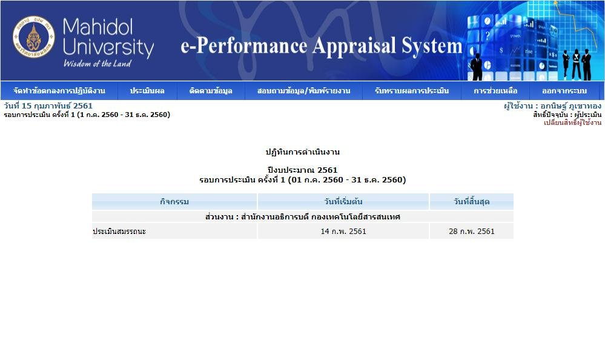
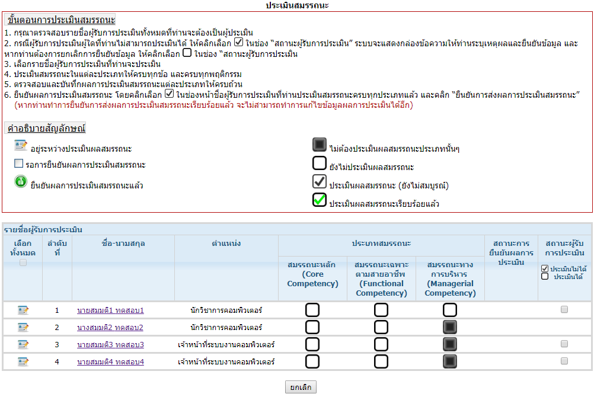
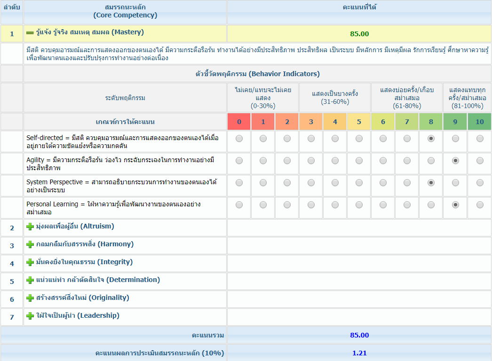

การประเมินสมรรถนะออนไลน์ สำหรับผู้ประเมิน
โปรแกรมนี้คืออะไร
- โมดูลหนึ่งในระบบ e-PA ให้ผู้ประเมินเข้าไปให้คะแนนสมรรถนะของผู้รับการประเมิน
- เจ้าหน้าที่ HR ส่วนงานเป็นคนเตรียมข้อมูลรอบและเปิดระบบ
- ไม่มีหน้ากรอกข้อตกลง / ตัวชี้วัด PA — ส่วนนั้นอยู่คู่มือ UM-03
หน้าตาโปรแกรม
1. เข้าสู่ระบบ
หลังรหัสถูก ต้องเลือก ปีงบประมาณ และ ช่วงเวลาการประเมิน ก่อนเข้าเมนูหลัก
2. หน้าหลัก

คู่มือเล่มนี้ใช้ 4 เมนู: ประเมินผล · สอบถามข้อมูล/พิมพ์รายงาน · การช่วยเหลือ · ออกจากระบบ
ภาพตัวอย่างยังเห็นเมนูอื่นของระบบเดียวกัน (จัดทำข้อตกลง, ติดตามข้อมูล, รับทราบผล) เพราะบัญชีนี้อาจมีสิทธิ์หลายแบบ — เล่มนี้ไม่อธิบายเมนูเหล่านั้น
3. รายชื่อผู้รับการประเมิน

- ช่องดำทึบ = ไม่ต้องประเมินประเภทนั้น (เช่น MC ของคนที่ไม่ได้เป็นผู้บริหาร)
- ติ๊กดำ = ประเมินแล้วยังไม่สมบูรณ์ · ติ๊กเขียว = ครบแล้ว
- วงกลมเขียวหน้าชื่อ = ยืนยันส่งผลแล้ว แก้ไม่ได้
4. หน้าให้คะแนนสมรรถนะ

แถบ 3 ประเภท: CC สมรรถนะหลัก · FC ตามสายอาชีพ · MC ทางการบริหาร เลือกอันไหนก่อนก็ได้ แต่ต้องครบทุกประเภทที่ระบบเปิดให้คนนั้น
ล่างหน้ามีช่องจุดเด่น / ข้อควรพัฒนา เพิ่มแถวหรือลบแถวได้ และมีปุ่มบันทึก 2 แบบ: ยังไม่ครบ (ค้างได้) กับ ครบถ้วนแล้ว
ขั้นตอนการใช้งาน
Login
IE 9+ / Chrome / Firefox → e-performance.mahidol → ชื่อ.นามสกุล + รหัสผ่าน Internet Account
เลือกปีงบประมาณและรอบ
ถ้ารอบไม่ถูกจะเข้าเมนูหลักของรอบนั้นไม่ได้
เมนูประเมินผล
ดูรายชื่อทั้งหมดที่ตนต้องประเมิน
คนที่ประเมินไม่ได้
ติ๊กสถานะ → กรอกเหตุผลใน Dialog → ยืนยัน (ยกเลิกการประเมินตนเองไม่ได้)
คนที่ประเมินได้
คลิกชื่อ → ให้คะแนนทีละพฤติกรรมครบทุกแถบ CC/FC/MC → บันทึก
ยืนยันการส่งผล เป็นขั้นแยก
เลือกทีละคนหรือทั้งหมด หลังยืนยันมีสัญลักษณ์หน้าชื่อ และแก้คะแนนไม่ได้แล้ว
พิมพ์รายงานจุดเด่น/ข้อควรพัฒนา
ส่งออก Excel เลือก 50/100/300/500 แถวต่อหน้า แล้ว File/Print
เงื่อนไขที่คู่มือบังคับ
- รหัสผ่านผิด 5 ครั้งติดกัน → ระงับ 1 ชั่วโมง
- สูตรรายการสมรรถนะ C = B / (A × 10) × 100 ตัวอย่างในเล่มได้ 85
- สูตรประเภท D = A × C / B ตัวอย่างสมรรถนะหลัก 10% ได้ 1.21
- ยืนยันส่งได้เมื่อประเมินครบทุกประเภทแล้วเท่านั้น แล้วยืนยันแล้วแก้ไม่ได้
- ไม่มีรหัส: สมัคร/เปิด Internet Account แล้วให้ HR ส่วนงานบันทึกเข้าฐานบุคลากร